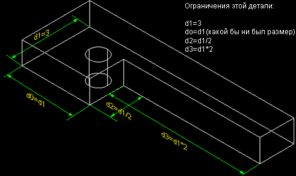
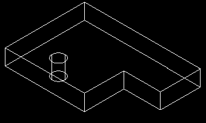
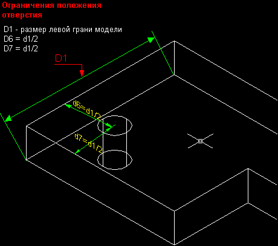
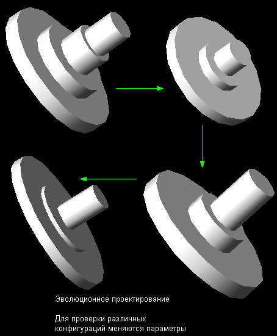

|
| Параметризация и зависимости |
|
Создание зависимостей является способом управления формой и размерами эскизов профилей и путей. Параметризованные эскизы являются зависимыми, а такие
зависимости - двумерными. Существую двумерные зависимости
горизонтальности,
вертикальности,
перпендикулярности,
параллельности,
ориентирования по касательной,
коллинеарности,
концентричности,
проецирования на объект,
соединения двух объектов,
установки координаты X,
установки координаты Y,
радиуса,
эквивалентности длины.
Можно наложить зависимости на длины, радиусы и углы различных элементов эскиза профиля или пути. Они бывают как фиксированные, так и переменные (тогда для
соответствующего элемента эскиза назначается своя переменная). При изменении одного или нескольких ограничений Mechanical Desktop пересчитывает размеры
остальных элементов.
Трёхмерные зависимости задаются между созданными деталями (Part) и определяют их положение в сборочном узле.
Когда зависимость является переменной, существует возможность управления элементами эскиза по определённым формулам. Например, требуется создать эскиз
прямоугольника, у которого длина x в два раза больше ширины y.
Команда AMSHOWCON
Отображает двухмерные символы зависимостей на выбранном эскизе
Команда AMSHOWCON используется для отображения двумерных зависимостей, которые уже существуют на выбранном эскизе и для помощи в полном определении
эскиза.

Кнопка инструментов
(Show Constraints) |
 |
Меню |
Part -> Sketch -> Show Constraints |
Команда |
AMSHOWCON |
All/Select/Next/<eXit>:
Выберите опцию или нажмите ENTER.
ALL Отображает все зависимости в выбранном эскизе.
SELECT Отображает зависимости для выбранных объектов в активном
эскизе.
Select objects in active sketch.
Select objects:
Выберите объекты и нажмите ENTER для отображения зависимостей.
NEXT Отображает зависимости, перебирая выбранные объекты.
Select objects in active sketch.
Select objects:
Выберите объекты и нажмите ENTER для продолжения.
Select constraint/eXit/<Next>:
Выберите опцию или нажмите ENTER для перебора зависимостей.
EXIT Завершаеткоманду.
Команда AMDELCON
Удаляет зависимости из выбранного эскиза.
Команда AMDELCON используется для удаления зависимостей из выбранного эскиза и изменения геометрических отношений между объектами эскиза. AMDELCON
отображает зависимости, уже наложенные на эскиз, и предоставляет опции для изменения размера отображения зависимостей и выбора зависимостей для
индивидуального или глобального удаления.
Кнопка инструментов
(Delete Constraints) |
 |
Меню |
Part -> Sketch -> Delete Constraints |
Команда |
AMDELCON |
Select sketch from which to remove the constraint:
Выберите эскиз
Если в рисунке присутствует только один эскиз, эта подсказка не отображается.
Size/All/<select>:
Выберите опцию или укажите зависимость
Size/All/<select>:
Выберите опцию,укажите другую зависимость или нажмите ENTER
ALL Выбирает все зависимости. При выборе этой опции, все зависимости удаляются и команда завершается.
SIZE Восстанавливает изображение всех зависимостей с указанным размером.
Укажите значение в появившемся диалоговом окне Constraint Display Size.

Команда AMADDCON
Накладывает двухмерные параметрические зависимости на определенные эскизы.
Команда AMADDCON используется для добавления параметрических зависимостей на выбранные профили, траектории, линии разреза или эскизы линии рассечения.
При этом можно включать или выключать отображение зависимостей, управлять размером их текста и при необходимости их удалять.
В процессе создания профиля или траектории, каждый объект в эскизе получает номер. Если зависимость связывает два объекта, за символом зависимости
следует номер связанного объекта.

Используйте команду AMADDCON для:
- добавления зависимости между текущим эскизом и кромками существующей модели, рабочими плоскостями или осями, которые не являются частью геометрии
выбранного эскиза;
- очистки свободного эскиза, где эскиз не определился как Вы ожидали;
- уменьшения числа размеров, требуемых для определения эскиза.
Меню |
Part -> Sketch -> Add Constraints |
Команда |
AMADDCON |
Hor/Ver/PErp/PAr/Tan/CL/CN/PRoj/Join/XValue/YValue/Radius/Length<eXit>:
Выберите опцию или нажмите ENTER
HOR Ориентирует сегменты линии по горизонтали.
Кнопка инструментов
(Horizontal) |
 |
Меню |
Part -> Sketch -> Add Constraints -> Horizontal |
Select line:
Выберите линию:
Solved underconstrained sketch requiring 5 dimensions or constraints.
Select line:
Выберите следующую линию или нажмите ENTER.
VER Ориентирует сегменты линии по вертикали.
Кнопка инструментов
(Vertical) |
 |
Меню |
Part -> Sketch -> Add Constraints -> Vertical |
Select line:
Выберите линию:
Solved underconstrained sketch requiring 4 dimensions or constraints.
Select line:
Выберите следующую линию или нажмите ENTER.
PERP Ориентирует сегменты линии или эллипса взаимно перпендикулярно.
Кнопка инструментов
(Perpendicular) |
 |
Меню |
Part -> Sketch -> Add Constraints -> Perpendicular |
Select first line or ellipse:
Выберите первую линию или эллипс:
Select second line or ellipse:
Выберите вторую линию или эллипс:
Solved underconstrained sketch requiring 3 dimensions or constraints.
Select first line or ellipse:
Выберите первую линию или эллипс или нажмите ENTER.
PAR Ориентирует сегменты линии или эллипса взаимно параллельно.
Кнопка инструментов
(Parallel) |
 |
Меню |
Part -> Sketch -> Add Constraints -> Parallel |
Select first line or ellipse:
Выберите первую линию или эллипс:
Select second line or ellipse:
Выберите вторую линию или эллипс:
Solved underconstrained sketch requiring 10 dimensions or constraints.
Select first line or ellipse:
Выберите первую линию или эллипс или нажмите ENTER.
TAN Ориентирует сегменты линии, круга, дуги или эллипса по касательной.
Кнопка инструментов
(Tangent) |
 |
Меню |
Part -> Sketch -> Add Constraints -> Tangent |
Select line, circle, arc, or ellipse:
Выберите линию, круг, дугу или эллипс:
Select circle, arc, or ellipse:
Выберите круг, дугу или эллипс:
Solved underconstrained sketch requiring 7 dimensions or constraints.
CL Ориентирует сегменты линии коллинеарно.
Кнопка инструментов
(Collinear) |
 |
Меню |
Part -> Sketch -> Add Constraints -> Collinear |
Select first line:
Выберите первую линию:
Select second line:
Выберите вторую линию:
Solved underconstrained sketch requiring 4 dimensions or constraints.
Select first line:
Выберите первую линию или нажмите ENTER.
CN Ориентирует дуги, круги, эллипсы и рабочие точки концентрично.
Кнопка инструментов
(Concentric) |
 |
Меню |
Part -> Sketch -> Add Constraints -> Concentric |
Select first arc, circle, ellipse, or work point:
Выберите первую дугу, круг, эллипс или рабочую точку:
Select second arc, circle, ellipse, or work point:
Выберите вторую дугу, круг, эллипс или рабочую точку:
Solved underconstrained sketch requiring 6 dimensions or constraints.
Select first arc, circle, ellipse, or work point:
Выберите первую дугу, круг, эллипс или рабочую точку или нажмите ENTER.
PROJ Проецирует линии, круги, дуги, эллипсы и сплайны на другой объект
эскиза. Для указания, какая точка первого объекта проецируется на второй объект, должна
использоваться объектная привязка.
Кнопка инструментов
(Project) |
 |
Меню |
Part -> Sketch -> Add Constraints -> Project |
Specify point to project (use a snap mode):
Выберите первый объект (используйте объектную привязку):
Select line, circle, arc, ellipse, or spline:
Выберите линию, круг, дугу, эллипс или сплайн:
Solved underconstrained sketch requiring 5 dimensions or constraints.
Specify point to project (use a snap mode):
Выберите первый объект (используйте объектную привязку) или нажмите ENTER.
JOIN Соединяет вместе два объекта.
Кнопка инструментов
(Join) |
 |
Меню |
Part -> Sketch -> Add Constraints -> Join |
Specify first point to join (use a snap mode):
Выберите первую точку для соединения (используйте объектную привязку):
Specify the second point to join (use a snap mode):
Выберите вторую точку для соединения (используйте объектную привязку):
Solved underconstrained sketch requiring 4 dimensions or constraints.
Specify first point to join (use a snap mode):
Выберите первую точку для соединения (используйте объектную привязку)
или нажмите ENTER.
XVALUE Назначает центрам дуг и кругов, конечным точкам
линий, дуг и сплайнов одинаковую координату Х.
Кнопка инструментов
(XValue) |
 |
Меню |
Part -> Sketch -> Add Constraints -> XValue |
Select first line, arc or circle:
Выберите первую линию, дугу или круг:
Select second line, arc or circle:
Выберите вторую линию, дугу или круг:
Solved underconstrained sketch requiring 9 dimensions or constraints.
Select first line, arc or circle:
Выберите первую линию, дугу или круг или нажмите ENTER.
YVALUE Назначает центрам дуг и кругов, конечным точкам
линий, дуг и сплайнов одинаковую координату Y.
Кнопка инструментов
(YValue) |
 |
Меню |
Part -> Sketch -> Add Constraints -> YValue |
Select first line, arc or circle:
Выберите первую линию, дугу или круг:
Select second line, arc or circle:
Выберите вторую линию, дугу или круг:
Solved underconstrained sketch requiring 9 dimensions or constraints.
Select first line, arc or circle:
Выберите первую линию, дугу или круг или нажмите ENTER.
RADIUS Назначает дугам и кругам одинаковый радиус.
Кнопка инструментов
(Radius) |
 |
Меню |
Part -> Sketch -> Add Constraints -> Radius |
Select first arc or circle:
Выберите первую дугу или круг:
Select second arc or circle:
Выберите вторую дугу или круг:
Solved underconstrained sketch requiring 3 dimensions or constraints.
Select first arc or circle:
Выберите первую дугу или круг или нажмите ENTER.
EQUAL LENGTH Назначает сегментам линий и сплайнов одинаковую длину.
Кнопка инструментов
(Equal Length) |
 |
Меню |
Part -> Sketch -> Add Constraints -> Equal Length |
Select first line:
Выберите первую линию:
Select second line:
Выберите вторую линию:
Solved underconstrained sketch requiring 8 dimensions or constraints.
Select first line:
Выберите первую линию или нажмите ENTER.
Если чертежи деталей и сборочных единиц связаны гиперсвязями с файлом трёхмерной модели, можно на основе одного комплекта параметризированной
документации создавать комплекты вариантов изделия заданного параметрического ряда.
Термин параметрическая модель означает модель изделия, в которой используются не жёстко установленные размеры, а символические параметры. В результате
на основе такой параметрической модели можно формировать параметрический ряд изделий, подставляя конкретные значения базовых параметров.
Например, если для улучшения конструкции необходимо сделать незначительную корректировку и изменить модель, то ограничения позволяют выполнить это без
изменения критичной формы или требуемых размеров.
Рассмотрим процесс создания параметризованного профиля прямоугольника.
Шаг 1 |
Создаётся прямоугольный эскиз. |

Шаг 2 |
Определяются переменные x и y. |
Кнопка инструментов
(Design Variables) |
 |
Меню |
Part -> Design Variables |
Команда |
AMVARS |
Появилось диалоговое окно Design Variables.

Для определения новых переменных нажмимаем New. В появившемся диалоговом окне New Part Variable введём имя переменной x, а в графе Equation (Равенство)
40.

Таким же образом определим новую переменную y. Для нее в графе Equation введите 2*x.
Диалоговое окно Design Variables должно выглядеть так:

Шаг 3 |
Добавляем в прямоугольный эскиз размеры и обозначают меньшую сторону через x, большую через y. |
Для добавления размера воспользуемся одним из методов:
Кнопка инструментов
(Add Dimention) |
 |
Меню |
Part -> Add Dimention |
Команда |
AMPARDIM |
Select first object:
Выберите первый объект:
Select second object or place dimension:
Выберите расположение размера:
Undo/Hor/Ver/Align/Par/aNgle/Ord/Diameter/pLace/Enter dimension value <37.7384>:
Введите x.
Solved underconstrained sketch requiring 1 dimensions or constraints.
Select first object:
Select second object or place dimension:
Undo/Hor/Ver/Align/Par/aNgle/Ord/Diameter/pLace/Enter dimension value
<67.0459>:
Введите y.
Solved fully constrained sketch.

Эскиз изменился. Теперь сторона, обозначенная через x равна 40, а через y 80. При изменении граф Equation в диалоговом окне Design Variables эскиз
будет изменяться.
Рассмотрим процесс параметризации готовой объёмной модели.

Какой бы ни был размер d1, все остальные отношения должны оставаться неизменными.
Теперь перед вами тот же базовый примитив, но после изменения размера d1 с 3 до 1.

Накладывая подобным образом ограничения, можно сохранять некоторые размеры и отношения неизменными, экспериментируя с общими габаритами детали.
Если необходимо, чтобы отверстие оставалось в центре, то на него можно наложить следующие ограничения:

Каким бы ни был размер d1, размеры d6 и d7 всегда будут равны 1/2 d1.
Параметрические модели могут легко подгоняться и модифицироваться с целью проверки различных конфигураций размеров. Такой процесс иногда называют
проектированием "что, если".

|